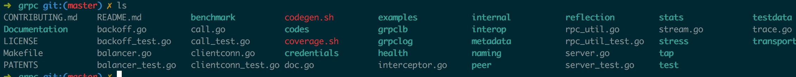

GRPC golang版源码分析之客户端(一)
1 前言
grpc是一个通用的rpc框架，用google实现，当然也有go语言的版本。在工作中主要用到这个库，所以看看源码加强自己对框架的了解。目前来说主要分析的都以go版本为主(并没有看其他语言版本).由于个人水平有限，代码中的有些思想也是个人揣测，难免有些错误，如果发现错误，还望帮忙指出。
2 源码目录浏览
grpc使用protobuf（google的序列化框架）作为通信协议，底层上使用http2作为其传输协议，grpc源码中自己实现了http2的服务端跟客户端，而并没有用net/http包。http2有很多特性能够高效的传输数据，具体特点可以看相关链接详细了解。 grpc目录如下:  看名字大概能看出这些目录中代码是哪些关系，documentation目录是存放一些文档，benchmark是压测，credentials是验证，examples是例子，grpclb是负载均衡，grpclog是日志,health是服务健康检查,metadata是元数据(用户客户端给服务端传送一些特殊数据，具体可以看相关链接),naming目录是提供名字服务需要实现的接口(相当于一个dns),stats是统计信息,transport 传输层实现(主要是http2的客户端与服务端时实现, 不会详细说这个目录),还有其他一些比较无关紧要的目录就不一一介绍了。
3 客户端
在example目录中有两个比较简单的例子，就先从这里入手吧，
func main() { // Set up a connection to the server. //建立一个链接 conn, err := grpc.Dial(address, grpc.WithInsecure()) if err != nil { log.Fatalf("did not connect: %v", err) } defer conn.Close() c := pb.NewGreeterClient(conn) // Contact the server and print out its response. name := defaultName if len(os.Args) > 1 { name = os.Args[1] } //调用函数 r, err := c.SayHello(context.Background(), &pb.HelloRequest{Name: name}) if err != nil { log.Fatalf("could not greet: %v", err) } log.Printf("Greeting: %s", r.Message) }
grcp.WithInsecure参数是在链接https服务端时不用检查服务端的证书(要是你相信服务端就不用检查).Dial函数对服务端建立一个连接， grpc.Dial函数:
func DialContext(ctx context.Context, target string, opts ...DialOption) (conn *ClientConn, err error) { cc := &ClientConn{ target: target, conns: make(map[Address]*addrConn), } cc.ctx, cc.cancel = context.WithCancel(context.Background()) defer func() { select { case <-ctx.Done(): conn, err = nil, ctx.Err() default: } if err != nil { cc.Close() } }() //设置grpc的各种选项 for _, opt := range opts { opt(&cc.dopts) } // Set defaults. if cc.dopts.codec == nil { //默认用protobuf编解码 cc.dopts.codec = protoCodec{} } if cc.dopts.bs == nil { cc.dopts.bs = DefaultBackoffConfig } creds := cc.dopts.copts.TransportCredentials //验证信息 if creds != nil && creds.Info().ServerName != "" { cc.authority = creds.Info().ServerName } else { colonPos := strings.LastIndex(target, ":") if colonPos == -1 { colonPos = len(target) } cc.authority = target[:colonPos] } var ok bool waitC := make(chan error, 1) //启动一个goroutine启动名字服务器(类似dns) go func() { var addrs []Address if cc.dopts.balancer == nil { // Connect to target directly if balancer is nil. // 如果没设置负载均衡器，则直接连接 addrs = append(addrs, Address{Addr: target}) } else { var credsClone credentials.TransportCredentials if creds != nil { credsClone = creds.Clone() } config := BalancerConfig{ DialCreds: credsClone, } //启动负载均衡服务 if err := cc.dopts.balancer.Start(target, config); err != nil { waitC <- err return } ch := cc.dopts.balancer.Notify() if ch == nil { // There is no name resolver installed. addrs = append(addrs, Address{Addr: target}) } else { addrs, ok = <-ch if !ok || len(addrs) == 0 { waitC <- errNoAddr return } } } for _, a := range addrs { //给每个地址一个conn，连接池 if err := cc.resetAddrConn(a, false, nil); err != nil { waitC <- err return } } close(waitC) }() var timeoutCh <-chan time.Time if cc.dopts.timeout > 0 { timeoutCh = time.After(cc.dopts.timeout) } select { case <-ctx.Done(): return nil, ctx.Err() case err := <-waitC: if err != nil { return nil, err } case <-timeoutCh: return nil, ErrClientConnTimeout } // If balancer is nil or balancer.Notify() is nil, ok will be false here. // The lbWatcher goroutine will not be created. if ok { go cc.lbWatcher() } return cc, nil }
通过dial这个函数，grpc已经建立了到服务端的连接，启动了自定义负载平衡（如果有的话）. pb.NewGreeterClient这行代码是通过protoc工具自动生成的，它包一个grpc连接包裹在一个struct内方便调用生成的客户端grpc调用代码。接下来grpc客户端调用SayHello向服务器发送rpc请求。
func (c *greeterClient) SayHello(ctx context.Context, in *HelloRequest, opts ...grpc.CallOption) (*HelloReply, error) { out := new(HelloReply) //调用实际的发送请求函数 err := grpc.Invoke(ctx, "/helloworld.Greeter/SayHello", in, out, c.cc, opts...) if err != nil { return nil, err } return out, nil } //最后主要是invoke函数 func invoke(ctx context.Context, method string, args, reply interface{}, cc *ClientConn, opts ...CallOption) (e error) { c := defaultCallInfo for _, o := range opts { //调用之前的hook if err := o.before(&c); err != nil { return toRPCErr(err) } } defer func() { for _, o := range opts { //执行完后的hook o.after(&c) } }() //trace相关代码 if EnableTracing { c.traceInfo.tr = trace.New("grpc.Sent."+methodFamily(method), method) defer c.traceInfo.tr.Finish() c.traceInfo.firstLine.client = true if deadline, ok := ctx.Deadline(); ok { c.traceInfo.firstLine.deadline = deadline.Sub(time.Now()) } c.traceInfo.tr.LazyLog(&c.traceInfo.firstLine, false) // TODO(dsymonds): Arrange for c.traceInfo.firstLine.remoteAddr to be set. defer func() { if e != nil { c.traceInfo.tr.LazyLog(&fmtStringer{"%v", []interface{}{e}}, true) c.traceInfo.tr.SetError() } }() } //统计相关代码 if stats.On() { ctx = stats.TagRPC(ctx, &stats.RPCTagInfo{FullMethodName: method}) begin := &stats.Begin{ Client: true, BeginTime: time.Now(), FailFast: c.failFast, } stats.HandleRPC(ctx, begin) } defer func() { //结束后的统计相关代码 if stats.On() { end := &stats.End{ Client: true, EndTime: time.Now(), Error: e, } stats.HandleRPC(ctx, end) } }() topts := &transport.Options{ Last: true, Delay: false, } for { var ( err error t transport.ClientTransport stream *transport.Stream // Record the put handler from Balancer.Get(...). It is called once the // RPC has completed or failed. put func() ) // TODO(zhaoq): Need a formal spec of fail-fast. //传输层的配置 callHdr := &transport.CallHdr{ Host: cc.authority, Method: method, } if cc.dopts.cp != nil { callHdr.SendCompress = cc.dopts.cp.Type() } gopts := BalancerGetOptions{ BlockingWait: !c.failFast, } //得到传输成连接，在http2中一个传输单位是一个流。 t, put, err = cc.getTransport(ctx, gopts) if err != nil { // TODO(zhaoq): Probably revisit the error handling. if _, ok := err.(*rpcError); ok { return err } if err == errConnClosing || err == errConnUnavailable { if c.failFast { return Errorf(codes.Unavailable, "%v", err) } continue } // All the other errors are treated as Internal errors. return Errorf(codes.Internal, "%v", err) } if c.traceInfo.tr != nil { c.traceInfo.tr.LazyLog(&payload{sent: true, msg: args}, true) } // 发送请求 stream, err = sendRequest(ctx, cc.dopts.codec, cc.dopts.cp, callHdr, t, args, topts) if err != nil { if put != nil { put() put = nil } // Retry a non-failfast RPC when // i) there is a connection error; or // ii) the server started to drain before this RPC was initiated. // 在这两种情况下重试，1 链接错误 2 在rpc初始化之前服务端已经开始服务 if _, ok := err.(transport.ConnectionError); ok || err == transport.ErrStreamDrain { if c.failFast { return toRPCErr(err) } continue } return toRPCErr(err) } //收消息 err = recvResponse(ctx, cc.dopts, t, &c, stream, reply) if err != nil { if put != nil { put() put = nil } if _, ok := err.(transport.ConnectionError); ok || err == transport.ErrStreamDrain { if c.failFast { return toRPCErr(err) } continue } return toRPCErr(err) } if c.traceInfo.tr != nil { c.traceInfo.tr.LazyLog(&payload{sent: false, msg: reply}, true) } //关闭一个http2流 t.CloseStream(stream, nil) if put != nil { put() put = nil } //Errorf会判断返回十分ok return Errorf(stream.StatusCode(), "%s", stream.StatusDesc()) } }
在这个函数最主要是两个函数，一个是sendRequest,一个是recvResponse,首先看看sendRequest函数：
func sendRequest(ctx context.Context, codec Codec, compressor Compressor, callHdr *transport.CallHdr, t transport.ClientTransport, args interface{}, opts *transport.Options) (_ *transport.Stream, err error) { // 创建一个http2流 stream, err := t.NewStream(ctx, callHdr) if err != nil { return nil, err } defer func() { if err != nil { // If err is connection error, t will be closed, no need to close stream here. if _, ok := err.(transport.ConnectionError); !ok { t.CloseStream(stream, err) } } }() var ( cbuf *bytes.Buffer outPayload *stats.OutPayload ) //压缩不为空 if compressor != nil { cbuf = new(bytes.Buffer) } //统计 if stats.On() { outPayload = &stats.OutPayload{ Client: true, } } //编码并压缩数据 outBuf, err := encode(codec, args, compressor, cbuf, outPayload) if err != nil { return nil, Errorf(codes.Internal, "grpc: %v", err) } //写入流 err = t.Write(stream, outBuf, opts) if err == nil && outPayload != nil { outPayload.SentTime = time.Now() stats.HandleRPC(ctx, outPayload) } // t.NewStream(...) could lead to an early rejection of the RPC (e.g., the service/method // does not exist.) so that t.Write could get io.EOF from wait(...). Leave the following // recvResponse to get the final status. if err != nil && err != io.EOF { return nil, err } // Sent successfully. return stream, nil }
可以看到这个函数相当简单，做了两件事情，编码压缩数据并发送.再来看看recvResponse函数：
func recvResponse(ctx context.Context, dopts dialOptions, t transport.ClientTransport, c *callInfo, stream *transport.Stream, reply interface{}) (err error) { // Try to acquire header metadata from the server if there is any. defer func() { if err != nil { if _, ok := err.(transport.ConnectionError); !ok { t.CloseStream(stream, err) } } }() c.headerMD, err = stream.Header() if err != nil { return } p := &parser{r: stream} var inPayload *stats.InPayload if stats.On() { inPayload = &stats.InPayload{ Client: true, } } for { //一直读到流关闭 if err = recv(p, dopts.codec, stream, dopts.dc, reply, math.MaxInt32, inPayload); err != nil { if err == io.EOF { break } return } } if inPayload != nil && err == io.EOF && stream.StatusCode() == codes.OK { // TODO in the current implementation, inTrailer may be handled before inPayload in some cases. // Fix the order if necessary. stats.HandleRPC(ctx, inPayload) } c.trailerMD = stream.Trailer() return nil } func recv(p *parser, c Codec, s *transport.Stream, dc Decompressor, m interface{}, maxMsgSize int, inPayload *stats.InPayload) error { //接受数据 pf, d, err := p.recvMsg(maxMsgSize) if err != nil { return err } if inPayload != nil { inPayload.WireLength = len(d) } if err := checkRecvPayload(pf, s.RecvCompress(), dc); err != nil { return err } if pf == compressionMade { //解压 d, err = dc.Do(bytes.NewReader(d)) if err != nil { return Errorf(codes.Internal, "grpc: failed to decompress the received message %v", err) } } if len(d) > maxMsgSize { // TODO: Revisit the error code. Currently keep it consistent with java // implementation. return Errorf(codes.Internal, "grpc: received a message of %d bytes exceeding %d limit", len(d), maxMsgSize) } //数据解码 if err := c.Unmarshal(d, m); err != nil { return Errorf(codes.Internal, "grpc: failed to unmarshal the received message %v", err) } if inPayload != nil { inPayload.RecvTime = time.Now() inPayload.Payload = m // TODO truncate large payload. inPayload.Data = d inPayload.Length = len(d) } return nil }
这里可以看到一个recvRespon可能会处理多个返回，但是确实在同一个for循环中处理的，有点奇怪。客户端代码大概就是这个流程。代码来说不算太复杂。（主要不钻进http2的实现,刚开始我就去看http2，一头雾水） 其中还有重要的地方就是负载均衡，通过它我们可以根据算法自动选择要连接的ip跟地址，还有验证的使用，放到下一篇吧
4 相关链接
- https://github.com/grpc/grpc/blob/master/doc/load-balancing.md 负载均衡
- https://www.gitbook.com/book/ye11ow/http2-explained/details 介绍http2的书籍，写的非常好
- http://www.grpc.io/docs/guides/concepts.html#metadata metadata介绍,在源码的Documentation目录有metadata的详细介绍